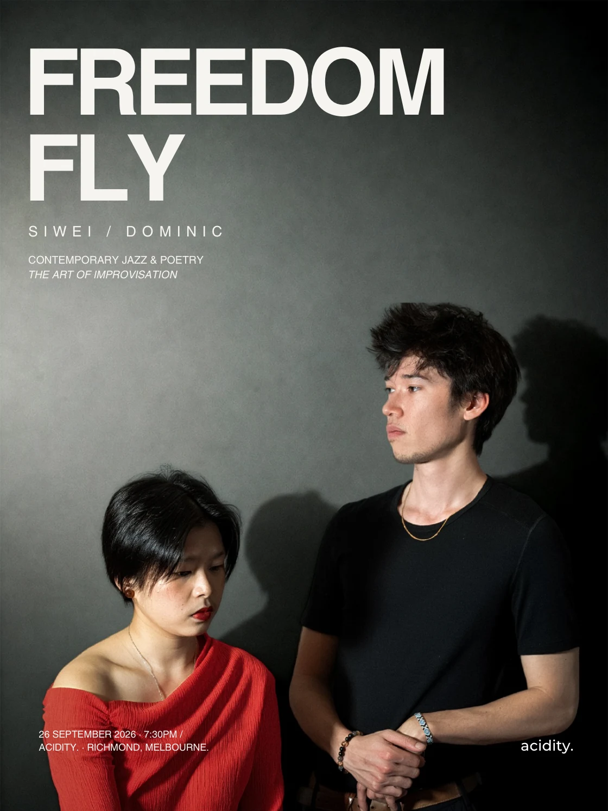

Live at Acidity
Freedom Fly
Contemporary jazz and the art of improvisation with Siwei and Dominic.
- Date
- Saturday, 26 September 2026
- Time
- 7:30PM
- Artists
- Siwei / Dominic
- Tickets
- Details to be announced

Contemporary jazz and the art of improvisation with Siwei and Dominic.
An intimate programme of contemporary jazz, spontaneous composition and musical conversation.